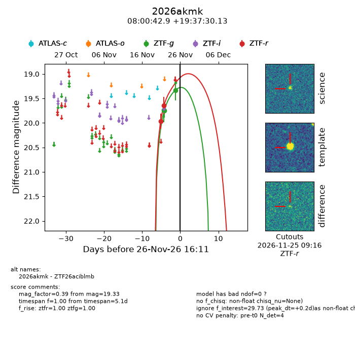
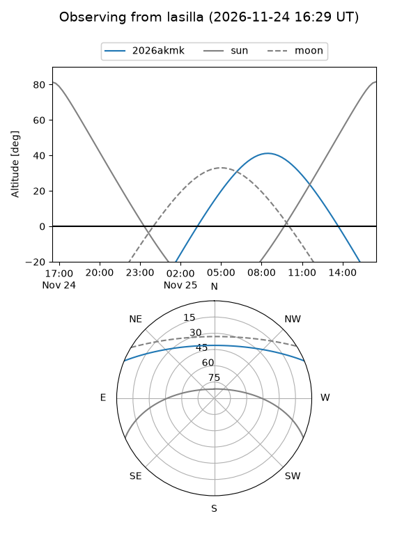
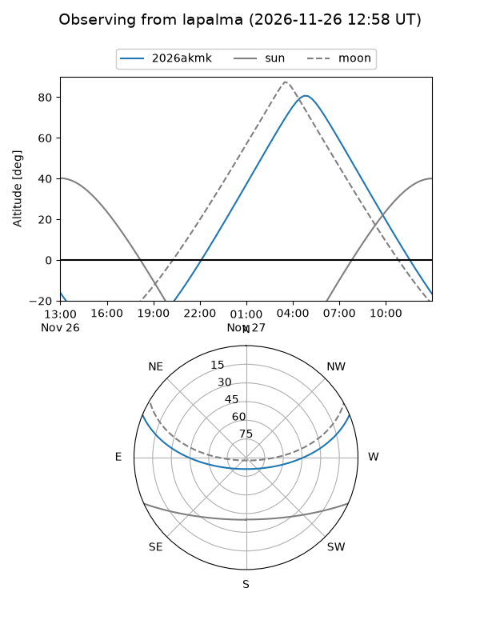
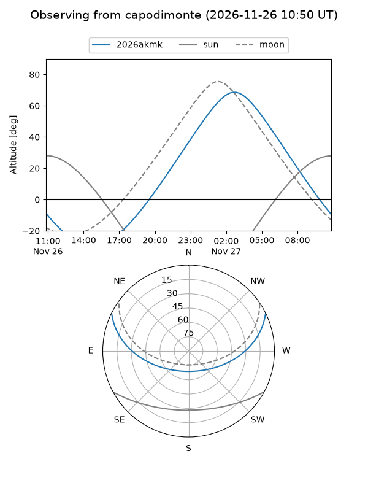
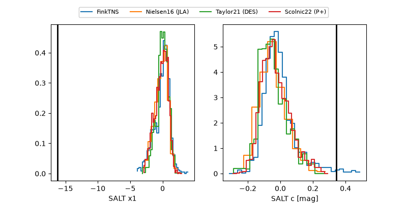

2026akmk
Target 2026akmk at 2026-11-26 16:18
Aliases and brokers:
FINK-ZTF: ztf.fink-portal.org/ZTF26aciblmb
Lasair-ZTF: lasair-ztf.lsst.ac.uk/objects/ZTF26aciblmb
ALeRCE-ZTF: alerce.online/object/ZTF26aciblmb
YSE-PZ: ziggy.ucolick.org/yse/transient_detail/2026akmk
TNS name: wis-tns.org/object/2026akmk
Direct TNS query: direct search
alt names
ZTF26aciblmb (ztf,fink_ztf)
2026akmk (tns,yse)
Coordinates:
equatorial (ra, dec) = 120.1786,+19.62504
equatorial (HMS+DMS) = 08:00:42.87,+19:37:30.13
galactic (l, b) = (202.1612,+23.74718)
Flags:
peak dt: +0.2
Photometry:
last ztfg=19.33, ztfr=19.64
2 ztfg, 2 ztfr detections
Lightcurve

Visibility



Additional plots
